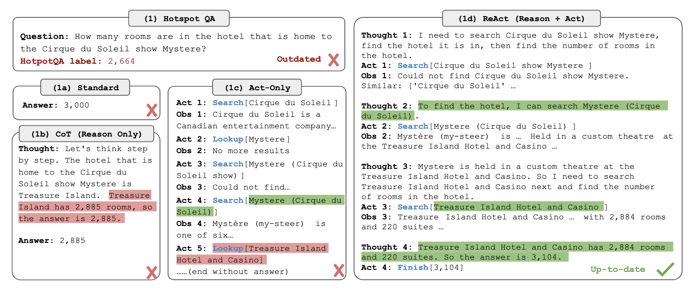
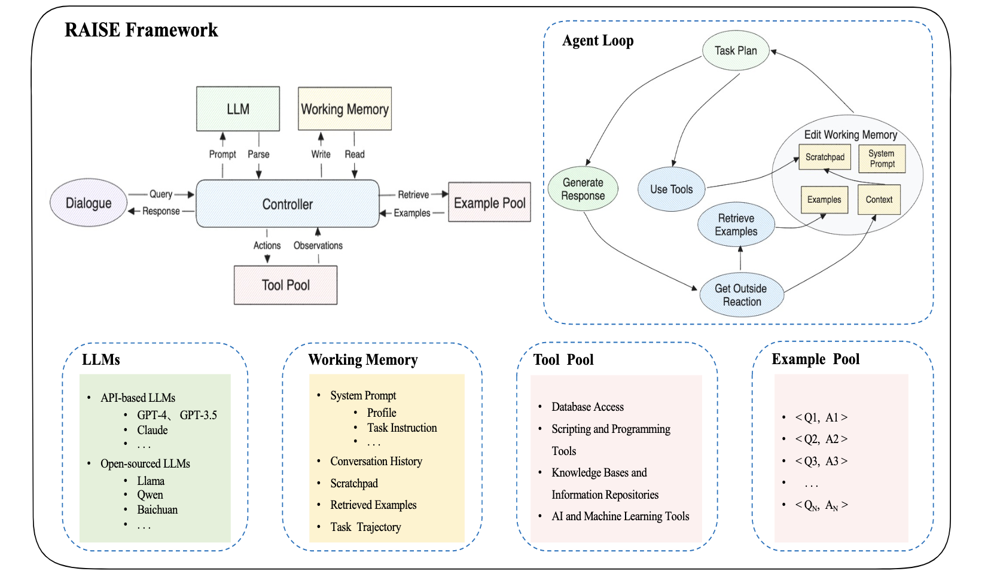
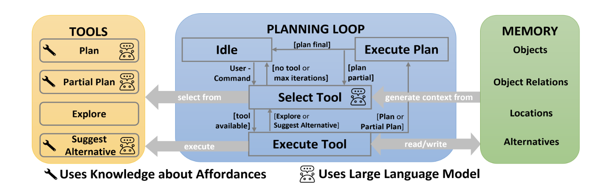
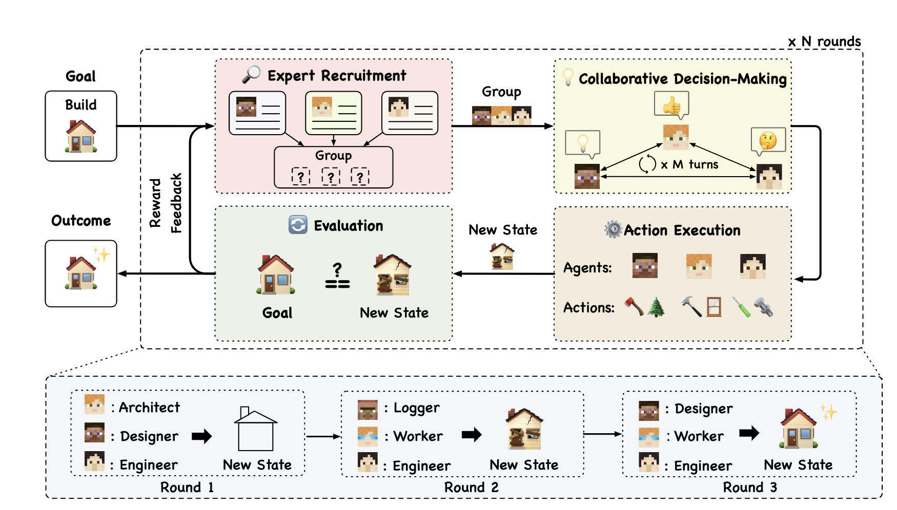

Agent 综述
The Landscape of Emerging AI Agent Architectures For Reasoning, Planning, And Tool Calling: A Survey 2024.4
Taxonomy
Agents AI Agent是受语言模型驱动的实体，能够规划并在多次迭代中采取行动以执行目标。智能体架构可以由一个单智能体组成，或者由多个智能体协作解决问题。
Agent Persona Agent Persona 描述了Agent应该扮演的角色，包括其他任何给Agent的指令。Persona同样包含其他Agent能够使用的工具描述。给agent塑造的个性被证实能够影响LLM在下游任务上的性能，比如写社交媒体帖子。使用Multiple agent personas 解决问题相比于CoT有显著的提升。
Tools 在AI agents的上下文中，tools代表模型可以调用的任何功能。允许agent与外部数据源进行交互。例如专业合同作家，persona解释他的作用和他需要完成的任务，tools表示在文档中添加注释的功能、阅读和理解现有文档内容的能力，以及发送包含最终草稿的电子邮件的工具。
Single Agent Architectures 只有一个LLM的架构，将独立完成所有的推理、规划和工具执行。智能体被赋予一个系统提示和完成其任务所需的任何工具。在单智能体模式中，没有来自其他AI agents的反馈；然而，可能有人提供反馈给agent。
Multi-Agent Architectures 架构涉及多个agents，每个agent可以使用相同的语言模型或一组不同的语言模型。Agent可能可以访问相同的工具或不同的工具。每个Agent有自己的persona。
Vertical Architectures 在这种结构中，一个Agent充当领导者，其他Agent直接向其报告。根据架构的不同，报告Agent可能只与领导Agent通信。或者领导者可以定义为所有Agent之间的共享对话。垂直架构的定义特征包括有一个领导智能体和清晰的分工。
Horizontal Architectures 在这种结构中，所有Agent都被视为平等的，并且是关于任务的一个群组讨论的一部分。Agent之间的通信发生在一个共享的线程中，每个Agent都可以看到其他Agent的所有消息。Agent也可以自愿完成特定任务或调用工具，这意味着它们不需要由领导Agent分配。水平架构通常用于协作、反馈和组讨论对任务总体成功至关重要的任务。
Single Agent Architectures
研究发现，智能体成功执行目标任务取决于适当的规划和自我修正。没有自我评估和制定有效计划的能力，单智能体可能会陷入无尽的执行循环，无法完成给定任务或返回不符合用户期望的结果。当任务需要直接的方法调用且不需要来自另一个智能体的反馈时，单智能体架构特别有用。
ReAct
ReAct(Reason+Act)方法中，agent首先写一个对于给定任务的thought，然后基于thought行动，得到结果。循环过程直到任务已经完成。ReAct方法展现出比zero-shot推理更好的效果，还提供了改进的人类交互和可信度，因为记录了模型的整个思考过程，在HotpotQA数据集上进行测试，ReAct方法的幻觉率为6%，而使用CoT方法的幻觉率为14%。
但是 ReAct 的局限性在于模型可能生成相同的想法和动作，并且无法创建新的想法来引发完成任务并推出ReAct循环。在执行期间如果能够结合人类反馈可能会提高其有效性和适用性。

RAISE
RAISE方法在ReAct方法的基础上增加了模拟人类短期和长期记忆的记忆机制，通过使用临时存储和长期存储的以往类似案例数据集来实现。这些组件的添加提升了智能体在较长对话中保持上下文的能力，并且通过微调模型，即使使用较小的模型也能获得最佳性能，展现了在效率和输出质量上超越ReAct的优势。尽管RAISE在某些方面显著改进了现有方法，但它在理解复杂逻辑方面存在挑战，限制了其在多种场景下的实用性。此外，RAISE智能体在其角色或知识方面经常出现幻觉，例如，一个没有明确角色定义的销售智能体可能会开始编写Python代码，而不是专注于其销售任务，有时还可能向用户提供误导性或错误的信息。尽管通过微调模型解决了一些问题，但幻觉仍是RAISE实现的一个限制。

Reflexion
使用语言反馈来进行自我反思，通过利用成功状态，当前轨迹以及持久内存等指标，结合大语言模型评估器为智能体提供具体的反馈，从而提高了成功率并减少了与链式思考（CoT）和ReAct方法相比的幻觉发生。 尽管Reflexion在某些方面取得了进步，但它也有局限性，包括容易陷入非最优的局部最小解，以及使用滑动窗口而非数据库来处理长期记忆，这限制了长期记忆的容量。此外，尽管Reflexion在性能上超越了其他单智能体模式，但在需要大量多样性、探索和推理的任务上，仍有提升性能的空间。
AUTOGPT + P
AutoGPT+P(Planning)是一种用解决自然语言命令机器人的agent的推理限制的方法，他结合了目标检测和Object Affordance Mapping (OAM)以及LLM驱动的规划系统，使agent能够探索环境中缺失的对象、提出替代方案或请求用户协助以实现目标。
AutoGPT + P首先利用场景图像来检测物体，然后语言模型根据这些物体从四种工具中选择使用：计划工具、部分计划工具、建议替代方案工具和探索工具。
LLM并不是完全独立生成plan的，他生成目标和步骤，后者使用Planning Domain Definition Language（PDDL）执行计划，LLM目前缺乏将自然语言直接转换为执行机器人任务的计划，主要是因为其推理能力受限。通过将LLM和经典规划起结合，效果优于使用基于语言模型的机器人规划方法。
缺点包括工具选择的准确性不一，有时可能会不恰当地调用某些工具或陷入循环。在需要探索的场景中，工具选择有时会导致不合逻辑的探索决策，例如在错误的地方寻找对象。此外，该框架在人类交互方面也存在限制，智能体无法寻求澄清，用户也无法在执行期间修改或终止计划。

LATS
Language Agent Tree Search通过使用树协同规划、行动和推理，这种技术受到蒙特卡洛树搜索的启发，将状态表示为节点，而采取行动则视为在节点之间的遍历。LATS使用基于语言模型的启发式方法来搜索可能的选项，然后利用状态评估器来选择行动。与其他基于树的方法相比，LATS实现了自我反思的推理步骤，显著提升了性能。当采取行动后，LATS不仅利用环境反馈，还结合来自语言模型的反馈，以判断推理中是否存在错误并提出替代方案。这种自我反思的能力与其强大的搜索算法相结合，使得LATS在执行各种任务时表现出色。
然而，由于算法本身的复杂性以及涉及的反思步骤，LATS通常比其他单智能体方法使用更多的计算资源，并且完成任务所需的时间更长。此外，尽管LATS在相对简单的问答基准测试中表现良好，但它尚未在涉及工具调用或复杂推理的更复杂场景中得到测试和验证。这意味着尽管LATS在理论上具有强大的潜力，但在实际应用中可能需要进一步的调整和优化。
Multi Agent Architectures
Embodied LLM Agents Learn to Cooperate in Organized Teams
领导智能体对于提升多智能体架构的表现至关重要。该架构通过设置一个领导智能体来实现垂直管理，同时允许智能体之间进行水平沟通，即除了与领导智能体交流外，智能体们还能相互之间直接交换信息。
研究发现，有组织领导的智能体团队完成任务的速度比没有领导的团队快近10%。此外，他们发现在没有指定领导的团队中，智能体大部分时间都在相互下达指令（约占沟通的50%），其余时间则用于分享信息或请求指导。相反，在有指定领导的团队中，领导的60%沟通涉及给出方向，促使其他成员更多地专注于交换和请求信息。结果表明，当领导是人类时，智能体团队最为有效。
除了团队结构之外，研究强调采用“批评-反思”步骤的重要性，用于生成计划、评估表现、提供反馈和重组团队。他们的结果表明，具有动态团队结构和轮流领导的智能体在任务完成时间和平均沟通成本上都提供了最佳结果。最终，领导力和动态团队结构提高了团队整体的推理、规划和执行任务的能力。
DyLAN
DyLAN（Dynamic LLM-Agent Network，）框架构建了一个专注于复杂任务如推理和代码生成的动态智能体结构。该框架通过评估每个智能体在上一轮工作中的贡献度，并仅将贡献最多的智能体带入下一轮执行，从而实现了一种水平式的工作模式，即智能体之间可以相互共享信息，而无需一个明确的领导者。DyLAN在多种衡量算术和一般推理能力的基准测试上展现了提升的性能，这突显了动态团队的重要性，并证明了通过持续地重新评估和排名智能体的贡献，能够构建出更适合完成特定任务的多智能体团队。
AgentVerse
AgentVerse是一种多智能体架构，它通过明确的团队规划来提升AI Agent的推理和问题解决能力。AgentVerse将任务执行划分为recruitment, collaborative decision making, independent action execution, and evaluation四个主要阶段，这些阶段可以根据目标的进展情况重复进行，直至最终目标达成。通过严格定义每个阶段，AgentVerse引导智能体集合更有效地进行推理、讨论和执行。
例如，在recruitment阶段，智能体会根据目标进展情况被添加或移除，确保在问题解决的任何阶段都有合适的智能体参与。研究者发现，水平团队通常更适合需要协作的任务，如咨询，而垂直团队则更适合那些需要明确划分责任和工具调用的任务。这种结构化的方法使得AgentVerse能够有效地指导智能体团队，以适应不同任务的需求，从而提高整体的执行效率和问题解决能力。

MetaGPT
MetaGPT是一种多智能体架构，旨在解决智能体在共同解决问题时可能出现的无效交流问题。在很多多智能体系统中，智能体之间的对话可能导致无关紧要的闲聊，这并不有助于推进任务目标。MetaGPT通过要求智能体生成结构化的输出，如文档和图表，而非交换非结构化的聊天记录，来解决这一问题。
此外，MetaGPT还实现了一种“发布-订阅”的信息共享机制。这种机制允许所有智能体在一个地方共享信息，但只阅读与其各自的目标和任务相关的信息。这不仅简化了整体目标的执行流程，还减少了智能体之间的交流噪声。在HumanEval和MBPP等基准测试中，与单智能体架构相比，MetaGPT的多智能体架构展现出了显著更好的性能。
Key Findings
Typical Conditions for Selecting a Single vs Multi-Agent Architecture
在选择单智能体与多智能体架构的典型条件方面，研究发现单智能体模式通常最适合工具列表有限且流程明确定义的任务。单智能体架构不仅实现起来相对简单，因为只需要定义一个智能体和一套工具，而且不会遇到来自其他智能体的不良反馈或分心的无关对话。然而，如果它们的推理和细化能力不强，可能会陷入执行循环，无法朝着目标取得进展。
多智能体架构特别适合于那些能够从多个智能体角色反馈中受益的任务，比如文档生成。在这样的架构中，一个智能体可以对另一个智能体所撰写的文档给出明确反馈。此外，当任务需要同时处理多个不同任务或工作流程时，多智能体系统也显示出其效用。研究还表明，在缺乏示例的情况下，多智能体模式相较于单智能体能够更好地执行任务。由于多智能体系统的复杂性，它们往往需要有效的对话管理和明确的领导来指导。
尽管单智能体和多智能体模式在它们的能力表现上存在差异，但研究指出，如果提供给智能体的提示本身已经足够优秀，那么多智能体间的讨论可能并不能进一步提升其推理能力。这意味着，在决定采用单一智能体还是多智能体架构时，应更多地考虑他们的具体用例和上下文需求，而不是仅仅基于推理能力这一单一标准。
Agents and Asynchronous Task Execution
智能体在处理异步任务执行方面扮演着关键角色。虽然单个智能体有能力同时启动多个异步任务，但其工作模式本质上并不支持跨不同执行线程的责任分配。这表示，任务虽然是并发处理的，但并不等同于由独立决策实体管理的真正并行处理。因此，单个智能体在执行任务时必须按顺序来，完成一批异步操作后才能继续进行评估和下一步操作。相比之下，多智能体架构允许每个智能体独立运作，从而实现了更为灵活和动态的职责分配。这种架构不仅使得不同领域或目标下的任务可以同时进行，而且还使得每个智能体都能够独立地推进自己的任务，而不受其他智能体任务状态的制约，体现了一种更为灵活和高效的任务管理策略。
Impact of Feedback and Human Oversight on Agent Systems
反馈和人类监督对智能体系统的影响至关重要。在解决复杂问题时，我们很少能在第一次尝试中就提出正确且稳健的解决方案。通常，会先提出一个可能的解决方案，然后对其进行批评和改进，或者咨询他人以获得不同角度的反馈。对于智能体而言，这种迭代反馈和改进的理念同样重要，有助于它们解决复杂问题。这是因为语言模型往往在回答的早期就急于给出答案，这可能导致它们逐渐偏离目标状态，形成所谓的“雪球效应”。通过实施反馈机制，智能体更有可能纠正自己的方向，从而达到目标。
此外，纳入人类监督可以改善即时结果，使智能体的响应更符合人类的预期，减少智能体采取低效或错误方法解决问题的可能性。至今为止，将人类验证和反馈纳入智能体架构已被证明能够产生更可靠和值得信赖的结果。然而，语言模型也表现出了迎合用户立场的倾向，即使这意味着放弃公正或平衡的观点。特别是，AgentVerse论文描述了智能体如何容易受到其他智能体反馈的影响，哪怕这些反馈本身并不合理。这可能导致多智能体架构制定出偏离目标的错误计划。虽然强有力的提示可以帮助缓解这一问题，但开发智能体应用时应意识到在实施用户或智能体反馈系统时存在的风险。
Challenges with Group Conversations and Information Sharing
在多智能体架构中，智能体之间的信息共享和群组对话存在挑战。多智能体模式更倾向于进行非任务相关的交流，比如互相问候，而单智能体模式则因为没有团队需要动态管理，更倾向于专注于手头任务。在多智能体系统中，这种多余的对话可能会削弱智能体有效推理和正确执行工具的能力，最终分散智能体的注意力，降低团队效率。特别是在水平架构中，智能体通常共享一个群聊，能够看到对话中每个智能体的每一条消息。通过消息订阅或过滤机制，可以确保智能体只接收与其任务相关的信息，从而提高多智能体系统的性能。
在垂直架构中，任务通常根据智能体的技能被明确划分，这有助于减少团队中的干扰。然而，当领导智能体未能向辅助智能体发送关键信息，且没有意识到其他智能体未获得必要信息时，就会出现挑战。这种失误可能导致团队混乱或结果失真。解决这一问题的一种方法是在系统提示中明确包含有关访问权限的信息，以便智能体进行适当情境的交互。
Impact of Role Definition and Dynamic Teams
角色定义对于单智能体和多智能体架构都至关重要。在单智能体架构中，清晰的角色定义确保智能体专注于既定任务，正确执行工具，并减少对其他能力的幻觉。在多智能体架构中，角色定义同样确保每个智能体都明白自己在团队中的职责，不会承担超出其描述能力和范围的任务。此外，建立一个明确的团队领导者可以简化任务分配，从而提高多智能体团队的整体表现。为每个智能体定义清晰的系统提示，可以减少无效沟通，避免智能体进行无关的讨论。
动态团队的概念，即根据需要将智能体引入或移出系统，也被证明是有效的。这确保了参与规划或执行任务的所有智能体都适合当前工作的需求，从而提高了团队的效率和任务执行的相关性。
Summary
无论是单智能体还是多智能体系统，在处理需要推理和工具调用的复杂任务时都表现出色。单智能体在有明确角色定位、工具支持、能够接收人类反馈，并能逐步向目标推进的情况下，工作效果最佳。而在构建协作的智能体团队以共同完成复杂目标时，如果团队中的智能体具备以下特征之一，将大有裨益：有明确的领导、有清晰的规划阶段并能根据新信息不断优化计划、能有效过滤信息以优化沟通，以及能够根据任务需要调整团队成员以确保他们具备相关技能。智能体架构若能融入这些策略之一，其表现很可能会超越单一智能体系统或缺乏这些策略的多智能体系统。
Limitations of Current Research and Considerations for Future Research
尽管AI Agent架构在很多方面显著增强了语言模型的功能，但在评估、整体的可靠性，以及解决由底层语言模型带来的问题等方面，仍然面临着挑战。
Challenges with Agent Evaluation
尽管大语言模型可以通常通过一套标准化的测试来评估其理解和推理能力，但对智能体的评估却没有统一的标准。许多研究团队为他们开发的智能体系统设计了独有的评估标准，这使得不同智能体系统之间的比较变得困难。此外，一些新设立的智能体评估标准包含手工打造的复杂测试集，这些测试集的评分需要人工完成。虽然这能够提供对智能体能力深度评估的机会，但它们通常缺乏大规模数据集的稳健性，并且由于评分者可能同时是智能体系统的开发者，这也可能引入评估偏见。此外，智能体在连续的迭代中生成一致答案的能力也可能因为模型、环境或问题状态的变化而受到影响，这种不稳定性在小规模且复杂的评估集中尤为突出。
Impact of Data Contamination and Static Benchmarks
一些研究人员使用标准的大语言模型基准来评估智能体系统的性能。然而,最新研究揭示了这些模型训练数据中可能存在数据污染问题。当基准测试问题被稍作修改后，模型的性能就会急剧下降,这一现象能够证实数据污染的存在。这一发现对语言模型及其驱动的智能体系统在基准测试中取得的高分提出了质疑,因为这些得分可能并不真实反映模型的实际能力。
同时，随着LLM技术的进步，现有的数据集往往跟不上模型日益增长的能力，因为这些基准测试的复杂度水平通常是固定不变的。为了应对这一挑战，研究人员已经开始开发动态基准测试，这些测试能够抵御简单的记忆行为。此外，他们还在探索创建完全合成的基准测试，这些基准测试将基于用户的特定环境或用例，以更准确地评估智能体的性能。尽管这些方法可能有助于减少数据污染，但减少人类的参与可能会增加评估结果在准确性和问题解决能力方面的不确定性。
Benchmark Scope and Transferability
许多语言模型基准被设计为在没有工具调用的单次迭代中解决，例如MMLU或GSM8K。虽然这些对于衡量基础语言模型的能力很重要，但它们并不是衡量智能体能力好的标准，因为它们没有考虑到智能体系统在多个步骤上推理或访问外部信息的能力。StrategyQA通过评估模型在多个步骤上的推理能力来改进这一点，但答案限于是/否响应。随着行业继续转向以智能体为重点的用例，将需要额外的措施来更好地评估智能体在涉及超出其训练数据的工具的任务中的性能和泛化能力。
一些特定的智能体基准，如AgentBench，评估基于语言模型的智能体在各种不同环境中的表现，如网页浏览、命令行界面和视频游戏。这更好地表明了智能体通过推理、规划和调用工具来实现给定任务的泛化能力。像AgentBench和SmartPlay这样的基准引入了客观的评估指标，旨在评估实现的成功率、输出与人类响应的相似度和整体效率。虽然这些客观指标对于理解实现的整体可靠性和准确性很重要，但考虑更微妙或主观的性能度量也很重要。工具使用效率、可靠性和规划稳健性等指标几乎和成功率一样重要，但更难衡量。这些指标的许多需要人类专家评估，与LLM作为评判的评估相比，这可能是昂贵且耗时的。
Real-world Applicability
目前，许多基准测试主要集中在评估智能体系统解决逻辑问题或进行电子游戏的能力上。这些测试的结果确实为我们提供了智能体系统潜在能力的线索，但它们是否能够准确反映智能体在现实世界任务中的表现，目前尚无定论。现实世界的数据往往更为复杂和多变，涉及的范围也远超现有基准测试的覆盖。
WildBench是一个典型的例子，它基于与ChatGPT进行的570,000次真实对话的数据集，因此包含了广泛的任务和情景，从而更全面地评估智能体的性能。尽管WildBench能够覆盖多样化的主题，但大多数现实世界的基准测试还是更倾向于专注于特定的任务。例如，SWE-bench就是一个专门针对Python软件工程任务的基准测试，它使用了GitHub上的现实世界问题集。这种基准测试在评估设计用于编写Python代码的智能体时非常有用，能够很好地展示智能体处理代码相关问题的推理能力。然而，当评价智能体处理其他编程语言的能力时，这类基准测试的参考价值就会大打折扣。
Bias and Fairness in Agent Systems
语言模型在评估过程中以及社会公平性方面常常表现出偏见。此外，智能体系统，被指出存在不够稳健的问题，它们有可能展现出不当行为，并能产生比传统语言模型更隐蔽的内容，这些都构成了严峻的安全挑战。还有研究观察到，即使在被引导从特定的政治角度进行辩论时，语言模型驱动的智能体仍然倾向于遵循模型内部固有的偏见，这可能导致推理过程中的错误。
随着智能体所承担的任务变得更加复杂，以及它们在决策过程中的参与度增加，研究者们需要更加深入地研究并解决这些系统中的偏见问题。这对研究者来说无疑是一项巨大的挑战，因为在创建可扩展和创新的评估基准时，通常需要语言模型一定程度的参与。然而，为了真正评估基于语言模型的智能体的偏见，所采用的基准测试必须包含人类的评估，以确保评估的准确性和公正性。
Conclusion and Future Directions
AI Agent能够有效增强LLM语言模型的推理、规划和工具调用能力。无论是单智能体还是多智能体架构，都展现出了解决复杂问题所需的问题解决能力。最适宜的智能体架构取决于具体的应用场景。不过，无论是哪种架构，表现优异的智能体系统通常会采用以下至少一种策略：明确的系统提示、清晰的领导和任务分配、专门的推理与规划到执行再到评估的流程、灵活的团队结构、人工或智能体的反馈机制，以及智能的消息筛选功能。这些技术的运用使得智能体在多种测试基准中表现得更加出色。
尽管AI驱动的智能体目前展现出巨大的潜力，但它们仍然面临着一些挑战和需要改进的地方。为了实现更加可靠的智能体，我们必须在不久的将来解决包括全面的基准测试、现实世界的适用性，以及减少语言模型中的有害偏见等问题。研究者通过回顾从静态语言模型到更加动态和自主的智能体的演变，旨在提供一个全面的视角来理解当前AI Agent领域的格局，并为那些正在使用现有智能体架构或正在开发定制智能体架构的个体或组织提供有价值的见解。